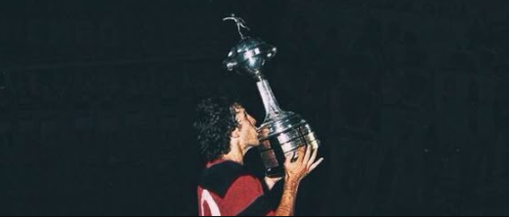
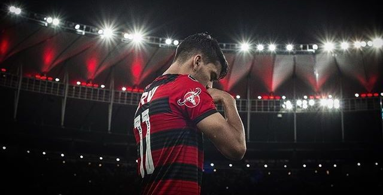
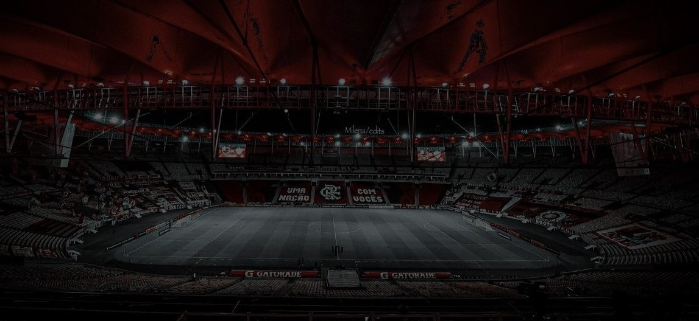
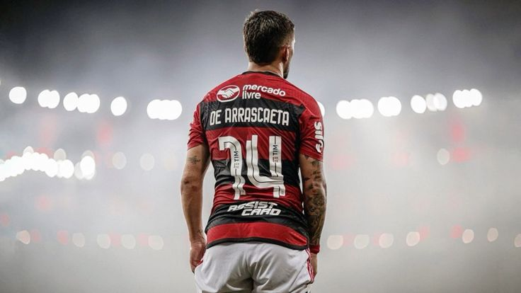
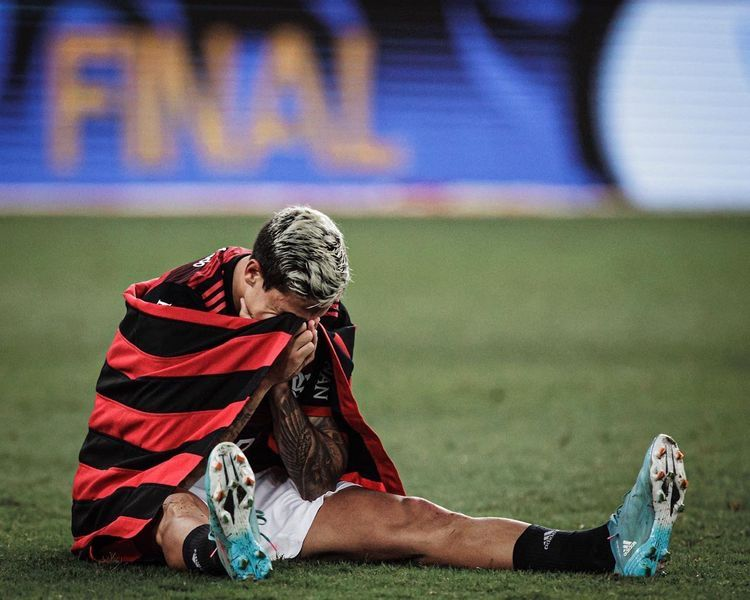

Momento Histórico
Imagem icônica do título do em 1981, a conquista inédita contra o Cobreloa.
Como principal jogador e artilheiro daquela edição com 11 gols.

De volta à casa!
Lucas Paquetá voltou ao Mengão e continua sua história com o Manto Sagrado.
O meio-campista retorna não como uma promessa, mas como uma realidade.

Mais uma vez a nação rubru negra lota o Maraca.
Um público excepcional viu jogo tenso, com boas chances para cada lado.

100 vezes Arrascaeta:
Maior artilheiro estrangeiro da história do clube.
Uruguaio chegou a 100 gols no último domingo na vitória sobre o Madureira.

Pedro,sofre lesão muscular e está fora da final da Libertadores
Nesta quarta-feira (19), exames constataram lesão muscular na coxa esquerda.
Filipe Luís completa 100 jogos como treinador do Flamengo:
O técnico Filipe Luís alcança nesta quinta-feira (26), a marca de 100 jogos como treinador do Flamengo.